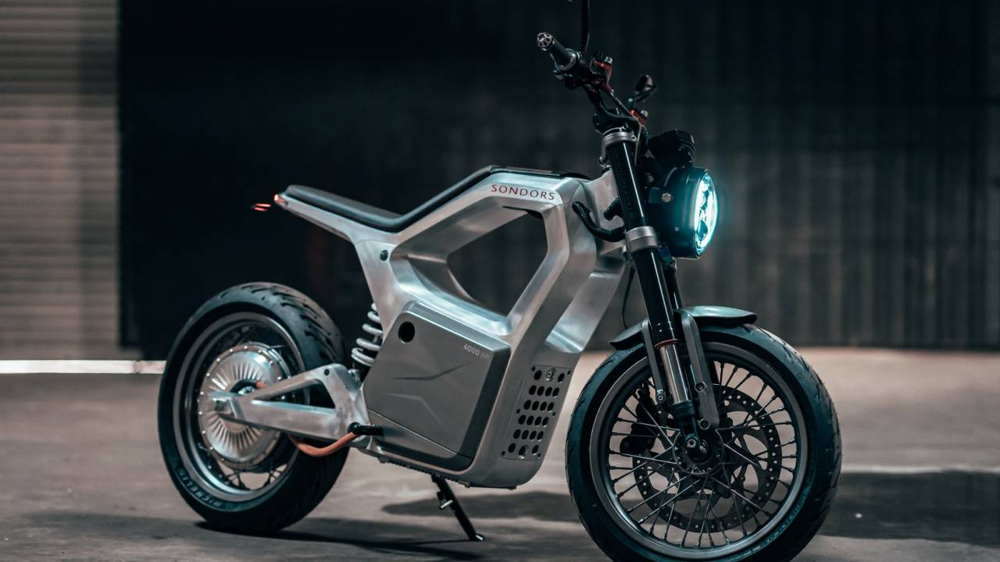
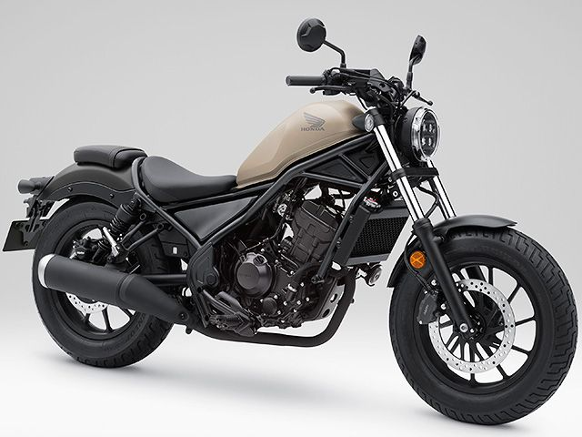
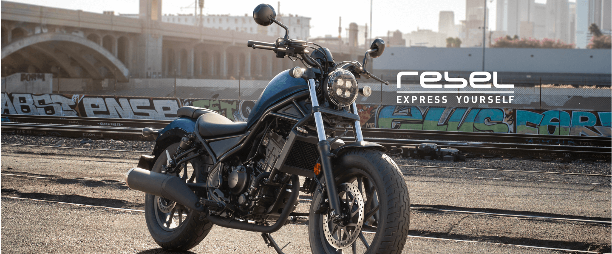

バイクに最近ハマった話【レブル２５０】

最近バイクにハマっている。YouTubeやブログを見るたびに欲しくなるため、文字でまとめて一旦冷静なろうと思案。デメリットとメリットを比べてく。
きっかけ

元々、バイクは苦手で自分が乗ると即事故やから乗らんほうがいいと思ってた。そんな僕の目に留まった一つのネットニュース。
そう、車体に穴の空いた電動バイク,【SONDORS Metacycle】だ。４時間でフル充電可能で最高時速１３０Km/hで、走行距離１２８Km/h。走行時のモーターは近未来感があり、乗ってみたいと本気で思った。
お値段は５２万と少々高めだが、買えなくはない…。が、日本から買えるのかわからなかったため断念。
ここが沼の入り口だった。
現在

バイクに乗ってみたいという思いだけが残り、YouTubeを彷徨うこと数週間。最後にたどり着いたのが【レブル２５０】。
単気筒エンジンの音、フォルム、ゆったりとしたクルーザー型でゆったりと旅したいと思うようになり、今に至る。
・早速、そのレブル２５０を買った場合のデメリットを考えていく
デメリット
とにかくお金がかかる
バイク単体の価格だけだの買える気がするが、それは罠だ。盗難保険に任意保険、ヘルメットやグローブなどのバイク用品、盗難防止グッズ、メンテナンス。全部揃えるとウン十万は軽く飛んでいく。
盗まれやすく、返ってこない
バイクは車と違って大人二人もいれば簡単に持ち上がるため盗みやすく。そして、盗まれたら最後、返ってこないかパーツを抜かれているかの二択になる。
また、バイク盗難の検挙率は１割と言われており、保険に入ってなかった場合泣き寝入りするしかないのだという。
事故でけがする確率が高い
車と違って車体に守られていないため、ダイレクトにケガする。どんなに安全運転をしていても事故に巻き込まれる可能性があるため、安全と言えない。
メリット
燃費がいい
リッターあたり、３０Km以上余裕で走れる。
カスタマイズ性が高い
色んなカスタマイズパーツがメーカーから販売されているため、気軽にカスタマイズできる。ミラーやヘッドライト、ハンドルなどが交換できて楽しそう。
まとめ

乗ってみないとわからない
メリットは思いつきにくく、実用性は低いと思う。しかし、デメリットをすべてひっくり返すほどの魅力が【レブル２５０】あるように感じる。
大学生だからこそバイクに挑戦すべきなのだろうか。